数据来源：知识星球「南半球聊财经」星主 Jason 不跪 当日发帖（美西时间 2026-07-01） 本报告逐帖转写原文、解读图片、补充背景与延伸知识，帮助系统性建立宏观/财经认知。
今日要点速览（共 16 帖）
今天 Jason 一口气发了 16 条，可以归成五条主线：
-
美国货币政策转"鹰"，但市场不信真会连续加息。 沃什（Kevin Warsh）领导的美联储强调"物价过高、要守住价格稳定"，6 月点阵图甚至暗示还有约 50 个基点的加息空间；同时冒出一个新词"芯片通胀"（chipflation）——内存价格一年涨了 6 倍。但大摩和巴克莱都判断：这更像是"风险溢价上升"，不是真正的加息周期开启。债券资金之所以大举流入，是冲着"绝对收益率高"（美债 ~4.25%、公司债 >5%），而不是赌债券价格上涨。
-
一套"全球过剩储蓄"框架，串起美债利率、美元和大宗商品。 华福证券用"顺差国的多余储蓄能不能填上美国的储蓄缺口"这个指标，解释了为什么 2022 年后美债利率中枢抬升、美元可能重新走强、大宗商品与储蓄周期同涨同跌，而美股估值反而"我行我素"。
-
中国房地产被从多个角度反复确认"在走弱"。 二手房价环比继续下跌（百城 -0.42%）、摩根士坦利看三季度更弱、JPM 直接判断"从周期性下行进入长期结构性下行"、带看指数和挂牌价全线走低，西安年内挂牌价领跌 -9.1%。
-
海外经济冷暖不均。 日本高市内阁支持率罕见连续 9 个月过六成、还在讨论减税发钱；赴日游客暴增倒逼日本上调出境税和签证费；德国大众计划全球裁员最多 10 万人、欧洲造车人工成本畸高；新西兰房价三连跌；俄罗斯经济悲观情绪创历史新高。
-
地缘：霍尔木兹海峡通行量正接近正常，伊朗谈判仍在僵持。 美方维持"谈判有进展"的姿态，但德黑兰否认直接会谈。
标签分布：#金融 5 帖、#其他国家经济 6 帖、#房价 5 帖。
帖 1 · 15:57 · #金融 — 沃什重申守住物价，市场博就业与降通胀预期
帖子原文
bloomberg：沃什重申央行致力于实现价格稳定，指出价格过高。他继续避免就政策和资产负债表提供指导，但表示至少短期内会有点阵图，他表示劳动力市场稳定，供应面稳健，同时承认过去四周通胀预期有所缓解。市场情绪高涨，预计政府周四发布的就业报告将显示，美国雇主在 6 月份新增了 115,000 个就业岗位。这将是自 2024 年中以来最强劲的六个月招聘期。原油和美债收益率下跌（叙事上高盛表示石油过剩将重新回归），美元上涨，EM 货币抹去今年涨幅，黄金上涨。
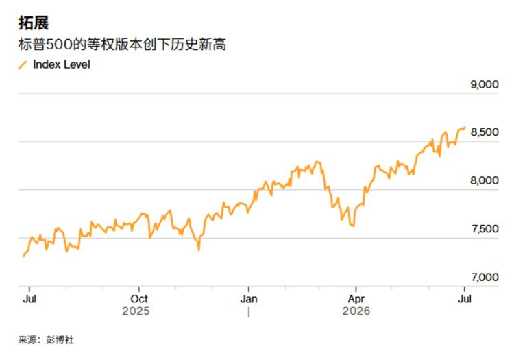
一句话核心：美联储主席沃什的口风偏"鹰"（强调通胀、不急于放松），但市场情绪却很高，因为大家预期本周就业报告会很强、通胀预期又有所回落——这是一种"经济稳、通胀可控"的乐观叙事。
背景与关键数据
- "沃什"指 Kevin Warsh，此处以美联储主席身份出现。"央行致力于价格稳定"是美联储法定双重使命之一（另一个是充分就业）。他说"价格过高"、"不就资产负债表给指引"，都是偏紧的信号——即不轻易暗示降息或扩表放水。
- "点阵图"（dot plot）：FOMC 每季度让每位委员匿名点出自己对未来利率的预测，汇总成一张散点图，是市场判断加息/降息路径最重要的参考之一。
- "6 月新增 11.5 万个岗位、近两年最强的半年招聘期"：非农就业是衡量美国经济体温的核心指标，强就业往往意味着经济有韧性，但也可能让美联储更不愿降息。
- 资产反应："原油跌、美债收益率跌、美元涨、新兴市场(EM)货币回吐今年涨幅、黄金涨"。
图片解读
- 这是彭博的一张走势图，标题"标普 500 的等权版本创下历史新高"，纵轴是指数点位（7000–9000），横轴从 2025 年 7 月到 2026 年 7 月。
- 曲线从约 7250 点一路震荡上行到约 8500 点，其间 2026 年 4 月有一次明显回调（跌到约 7600），随后又强劲反弹创新高。
- 重点在"等权"二字：普通的标普 500 是"市值加权"，走势容易被英伟达、苹果这几个巨头绑架；"等权版本"给 500 只成分股同样权重，它创新高说明上涨是"普涨"而非只靠几只权重股撑着，市场广度（breadth）很健康。
为什么重要 / 对市场的含义
- 央行嘴上偏鹰、但股市普涨创新高，说明市场把"经济稳 + 通胀预期回落"解读成好事，风险偏好高。
- 美元走强 + 新兴市场货币回吐涨幅，是典型的"美国相对更强"交易；黄金同时上涨则可能反映避险与实际利率的博弈。Jason 把这些资产联动放在一起，是想提示：一条宏观新闻会同时牵动股、债、汇、商品，要养成"看联动"的习惯。
延伸知识
- 市值加权 vs 等权指数：想象一个班级平均分。市值加权像"按体重算平均"，胖子（大市值股）说了算；等权像"每人一票"。当等权指数也创新高，说明"全班"都在进步，行情更扎实、更难被少数股票的回调击垮。
- "好消息是坏消息"陷阱：在加息周期里，太强的就业数据有时反而利空股市（因为会强化加息预期）。今天市场却"照单全收当利好"，说明当前主导情绪是"经济软着陆/不着陆"的乐观，而非"怕央行收紧"。这种情绪的切换本身就值得盯。
帖 2 · 15:50 · #金融 — 大摩：鹰派的 FOMC ≠ 马上加息
帖子原文
摩根斯坦利：6 月 FOMC 的点阵图似乎暗示额外 50 个基点 的加息空间，所以会议听起来偏鹰派。但这些预测可能是基于短期通胀偏高的假设，而没有充分反映后续通胀回落的可能。我们预计，核心通胀路径会比 FOMC 点阵图隐含的更低，所以美联储 2026 年会按兵不动，而不是很快加息。"芯片通胀"不会打断 AI 资本开支周期，过去一年内存价格上涨了 6 倍。这就是所谓的 chipflation，芯片通胀。市场重新定价和限制 AI 基础设施。随着 AI 暴露度提高，更多体现为生产率提升，而不是简单替代劳动力。美国中期选举对宏观前景影响有限，因为目前推动市场的核心因素——关税、地缘政治、去监管化——大概率仍会延续。
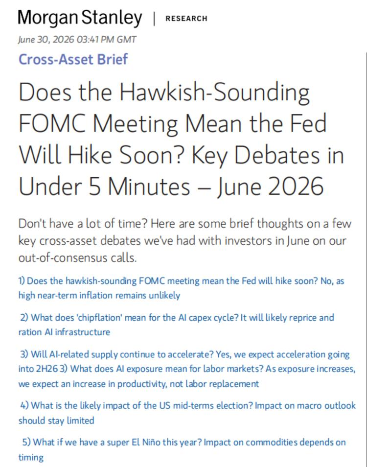
一句话核心：大摩的"逆共识"判断是——虽然点阵图看着凶（暗示还能加 50 基点），但通胀会比美联储想的回落得更快，所以 2026 年更可能"按兵不动"而不是加息。
背景与关键数据
- "50 个基点"= 0.50%。点阵图暗示还有 50bp 加息空间，意味着委员们中位数预期还要再加两次 25bp。
- "核心通胀"：剔除食品和能源后的通胀，波动小、更能反映趋势，是美联储真正盯的指标。
- "芯片通胀"(chipflation)：AI 建数据中心疯狂抢购内存/芯片，把内存价格一年推高 6 倍。这会推升"科技相关"物价，但大摩认为它不会掐断 AI 投资周期，反而通过"提升生产率"消化成本，而不是简单地"AI 抢人饭碗"。
- "关税、地缘政治、去监管化"被点名为当前推动市场的三大核心力量，且大摩认为中期选举也难改变它们的延续。
图片解读
- 这是摩根士坦利 2026 年 6 月 30 日的《Cross-Asset Brief（跨资产简报）》截图，标题直译是"听起来鹰派的 FOMC 会议是否意味着美联储很快加息？5 分钟看懂关键争论"。
- 正文列了 5 个"逆共识"问答：① 鹰派会议 ≠ 很快加息（因短期高通胀不太可能持续）；② "芯片通胀"对 AI 资本开支意味着"重新定价并限量分配 AI 基础设施"；③ AI 相关供给会继续加速，且随 AI 渗透率提高，更多体现为生产率提升而非替代劳动力；④ 中期选举对宏观影响有限；⑤ 若今年出现超级厄尔尼诺，对大宗商品的影响取决于时点。
- 图片本身是研报封面文字，价值在于把大摩的核心观点清单化，方便快速抓要点。
为什么重要 / 对市场的含义
- 这帖和帖 1 是"对照组"：帖 1 是央行嘴上偏鹰 + 市场乐观，帖 2 是卖方（大摩）解释"为什么别被鹰派吓到"。对投资者而言，关键分歧是这轮利率上行到底是"真加息周期"还是"临时的风险溢价"——判断错了，债券和成长股的仓位会完全反向。
- "芯片通胀"是新变量：它既是通胀压力来源，又是 AI 景气的证据，属于"矛盾的好消息"。
延伸知识
- "逆共识"(out-of-consensus)：卖方研究里最有价值的往往不是复述市场共识，而是有理有据地"和大家反着看"。看研报时可多留意机构"敢于和共识对赌"的地方，那里信息含量最高。
- 点阵图的局限：点阵图是"如果经济按我预测走，我认为利率该到哪"，它是条件预测、不是承诺。历史上点阵图经常"打脸"，所以大摩才敢说"别把点阵图当剧本"。
帖 3 · 15:46 · #其他国家经济 — 日本高市内阁高支持率 + 酝酿减税发钱
帖子原文
日经：6 月 26 日至 28 日实施的全国调查显示，高市早苗内阁的支持率为 68%，较 5 月的上次调查上升 2 个百分点，罕见的自上台以来连续 9 个月维持 6 成以上的高支持率。日本政府正在讨论在 2 年内将食品消费税率降至 1%、并向中低收入阶层发放现金的方案。
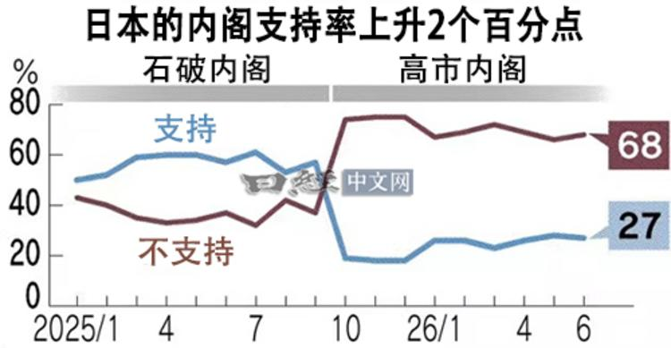
一句话核心：日本高市早苗内阁支持率高达 68%、且罕见地连续 9 个月保持在六成以上，政府正打算减食品消费税、给中低收入者发现金——典型的"高人气 + 扩张财政"组合。
背景与关键数据
- 日本的"内阁支持率"是政坛晴雨表。连续 9 个月过 60% 在日本很少见（历任首相往往上台后支持率快速滑落）。
- "食品消费税降到 1%"：日本消费税（类似增值税）目前标准税率 10%、食品等适用 8% 的轻减税率。把食品降到 1%，是直接给家庭减负、对冲通胀的民生政策。
- "向中低收入阶层发现金"：直接的财政转移支付，刺激消费。
图片解读
- 这是日经中文网的折线图，标题"日本的内阁支持率上升 2 个百分点"，纵轴 0–80%，横轴从 2025 年 1 月到 2026 年 6 月，中间用竖线分成"石破内阁"（前任）和"高市内阁"（现任）两段。
- 蓝线是"支持"、红线是"不支持"。在石破内阁时期两线胶着（都在 40–60% 间缠绕）；换成高市内阁后出现剧烈"剪刀差"：支持率跳升到 70% 附近、并稳定维持，不支持率则骤降到 20% 上下。最新读数：支持 68、不支持 27。
- 信号很清晰：领导人更替带来了明显的民意红利，且这份高支持一直没退潮。
为什么重要 / 对市场的含义
- 高支持率 + 扩张财政，通常意味着政府有政治资本推更多刺激。短期利好消费、利好日本内需股；但减税+发钱会加重日本本已沉重的财政负担，长期需关注国债供给和日元。
- 对宏观而言，日本"减税刺激内需"与全球"通胀是否回落"的大背景交织，是观察发达国家财政政策走向的一个样本。
延伸知识
- 消费税与"累退性"：消费税对穷人更"不友好"——因为低收入者收入中花在吃饭等必需品的比例更高，同样的税率负担感更重。所以"降食品税 + 给低收入者发钱"正是为了缓解这种"累退性"，是财政公平的常见操作。
- "蜜月期"民意：新领导人上台常有支持率高点（蜜月期），难的是"维持"。高市内阁能连续 9 个月过六成，说明施政得到持续认可，这在选举政治中是稀缺资产。
帖 4 · 15:43 · #其他国家经济 — 新西兰房价三连跌，IMF 却建议加息
帖子原文
bloomberg：根据房地产咨询公司 Cotality 的房价指数，新西兰 6 月房价连续第三个月下跌，接近三年低点。同时利率逆风并未消散，国际货币基金组织表示，新西兰央行目前利率太低会助长通胀，今年应将利率提高至中性水平 3%，以抵御通胀风险。
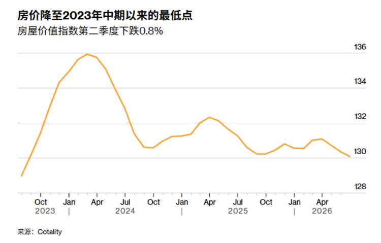
一句话核心：新西兰房价连跌三个月、逼近三年低点，但 IMF 却警告"利率太低会助长通胀"、建议今年把利率升到中性的 3%——房市和通胀在"打架"。
背景与关键数据
- "连续第三个月下跌、接近三年低点"：说明新西兰房市仍在磨底。
- "中性利率"(neutral rate)：既不刺激也不压制经济的那个利率水平，理论上的"不冷不热"档位。IMF 说现在利率低于中性、会火上浇油通胀，应上调到 3%。
- 这里的矛盾在于：房市想要低利率托底，但通胀风险要求高利率压制。央行只有一套利率工具，很难同时照顾两头。
图片解读
- 彭博折线图，标题"房价降至 2023 年中期以来的最低点"，副标题"房屋价值指数第二季度下跌 0.8%"。纵轴是指数（128–136），横轴从 2023 年到 2026 年。
- 走势："先冲高、后回落、再阴跌"：2023 年底从约 128 快速升到 2024 年初约 135.5 的高点，随后一路回落，中间几次小反弹都没站稳，到 2026 年年中跌回约 130，逼近本轮低位。
- 图形语言就是典型的"筑顶后的慢熊"——每次反弹高点都比前一次低。
为什么重要 / 对市场的含义
- 新西兰是"小型开放经济体 + 高度依赖房地产"的典型。它的两难（保房市还是压通胀）是很多发达经济体的缩影。
- 对投资者，这提示"降息不是万能药"：当通胀风险还在，央行未必敢为救房市而放松，房市磨底可能拉长。
延伸知识
- 房价对利率高度敏感：房子几乎都靠按揭买，利率一动，月供和购买力立刻变化。所以利率是房市最重要的"油门/刹车"。新西兰、加拿大、澳洲这类高杠杆购房的国家尤其敏感。
- IMF 的角色：国际货币基金组织常对成员国经济做"体检"并给政策建议（虽无强制力）。它建议加息，是站在"防通胀、保长期稳定"的立场，未必顾及短期房市阵痛。
帖 5 · 15:39 · #其他国家经济 — 大众拟裁员 10 万，欧洲造车人工成本畸高
帖子原文
日经：德国大众汽车正在考虑在全球范围内最多裁员 10 万人，相当于集团 65.7 万名员工总数的约 15%。大众将在 7 月 9 日召开的监事会议上，就包括裁员在内的长期战略展开讨论。德国等欧洲国家的生产成本较高。美国咨询公司奥纬咨询（Oliver Wyman）对全球汽车产业的单辆车人工成本进行对比后发现，截至 2024 年，德国为 3307 美元。这是日本（769 美元）的 4.3 倍、中国（597 美元）的 5.5 倍。英国、意大利和法国的人工成本同样较高，企业利润因此受到挤压。
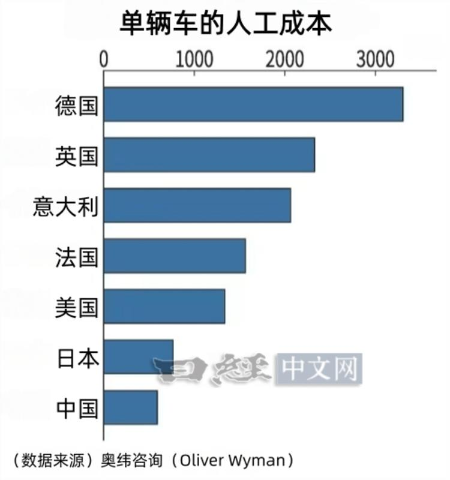
一句话核心：德国大众考虑全球裁员最多 10 万人（约占 15%），核心病因是欧洲造车的人工成本太高——德国单车人工成本是日本的 4.3 倍、中国的 5.5 倍。
背景与关键数据
- 裁员 10 万人 / 65.7 万总员工 ≈ 15%，是伤筋动骨级别的重组。
- 单辆车人工成本（截至 2024，奥纬咨询）：德国 3307 美元 > 日本 769 > 中国 597。德国是日本的 4.3 倍、中国的 5.5 倍。
- 这不是简单"工资高"，还包括社保、工时制度、工会力量等综合成本。
图片解读
- 日经中文网的横向条形图，标题"单辆车的人工成本"，横轴 0–3000+ 美元。
- 从高到低排序：德国最长（约 3300）> 英国（约 2300）> 意大利（约 2050）> 法国（约 1550）> 美国（约 1300）> 日本（约 770）> 中国（约 597，最短）。
- 一眼就能看出**"欧洲四国"扎堆在最高区间，而中日成本只有德国的零头**。这张图是理解"为什么欧洲车企要么裁员、要么外迁"的最直观证据。
为什么重要 / 对市场的含义
- 欧洲传统车企正被"两头夹击"：一边是电动化转型的巨额投入，一边是中国电动车用极低成本抢市场。高人工成本让它们利润被挤压，裁员和产能转移几乎是必然选项。
- 对全球产业链，这意味着汽车制造的重心继续向亚洲（尤其中国）转移；对欧洲，则是"去工业化"担忧和就业压力。
延伸知识
- 单位劳动成本(unit labor cost)：衡量"生产一件东西要付多少人工"，等于工资除以生产率。成本高不一定是工资太高，也可能是生产率不够。竞争力比拼的是这个比值，而非单看工资。
- "成本-竞争力"螺旋：成本高→产品贵→份额丢→只能裁员/外迁→本土产业空心化。德国制造业正处在这个压力测试中，这也是欧元区增长疲弱的结构性原因之一。
帖 6 · 15:37 · #房价 — 大摩：中国房企销售继续走弱
帖子原文
摩根斯坦利：6 月中国房企销售继续走弱，政策效果和前期积压需求正在消退，三季度销售可能进一步转弱，房价环比跌幅可能加快。
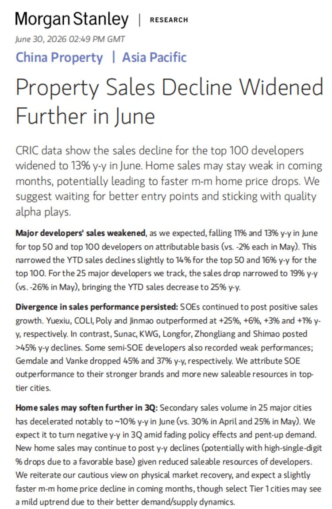
一句话核心：大摩说中国房企 6 月销售继续走弱，之前政策刺激和"积压需求"的劲头正在退去，预计三季度销售更弱、房价环比跌得更快。
背景与关键数据
- "政策效果消退"：指此前各种松绑（降首付、降房贷利率、放开限购）带来的短期回暖已经边际递减。
- "前期积压需求"（pent-up demand）：疫情或政策压抑期攒下的购房需求，一旦放开会集中释放，但释放完就没了，这正是当前的情况。
- "房价环比跌幅可能加快"：环比＝和上个月比。跌幅加快意味着下行在提速，而非企稳。
图片解读
- 这是大摩研报中的一页图表截图（图内为英文数据表/走势）。因是缩略图、分辨率有限，主要作用是给"销售走弱"的文字判断提供数据出处。核心结论仍以正文为准：销售动能减弱、三季度承压。
为什么重要 / 对市场的含义
- 房地产是中国经济的"大件"，牵动地方财政、上下游产业链（建材、家电、家具）和居民资产负债表。销售持续走弱会拖累这些环节。
- 这帖是今天"中国房地产走弱"系列（帖 6、9、11、13、16）的第一枪，后面几帖会从价格、结构、带看、挂牌价多角度反复印证。
延伸知识
- 销售是房市的"先行指标"：一般先看成交量（销售面积/金额）萎缩，再看价格下跌，最后传导到新开工和投资。所以盯房市要"先看量、后看价"。
- "积压需求"是一次性的：任何靠"释放存量需求"的复苏都难持续，因为它不创造新需求。真正的企稳要靠收入预期改善和人口/城镇化的新增需求，这也是帖 11 会展开的"结构性"话题。
帖 7 · 15:35 · #金融 — 华福：用"全球过剩储蓄"看懂美债、美元和大宗
帖子原文（较长，为核心研报，完整转写）
华福：全球贸易顺差主要集中在中日德三国，贸易逆差大多来自于美国。美国仍是当前全球过剩储蓄的核心来源国。2023 年之后，中国贡献全球过剩储蓄六成以上。我们以主要贸易顺差国的过剩储蓄规模，减去美国储蓄投资缺口（储蓄-投资）的差额，作为衡量全球超额储蓄充裕程度的核心指标。若该指标数值大于 0，意味着顺差国超额储蓄能够完全覆盖美国的储蓄缺口，全球可贷资金供给高于资金需求，市场利率易承压下行；反之则代表全球可贷资金供给不足以匹配资金需求。从历史数据来看，2008 年国际金融危机后，全球超额储蓄相对美国储蓄缺口的差额持续收窄，并在 2022 年由正转负，标志着全球超额储蓄格局从供给相对充裕格局转向短缺。2024-2025 年该指标有所反弹，但仍处于负值区间。受全球过剩储蓄减少影响，近十年来全球外汇储备基本没有增量。
2014 年之前，海外央行美债持有比例维持续上行，最高持仓占比一度达到 40%。彼时全球贸易顺差经济体持续累积巨额过剩储蓄，海量美元资金持续涌入美债市场，压低美债实际利率、约束利率上行弹性。但 2014 年后，伴随新兴市场和发展（中）国家占比下降约 12 个百分点。相对于美债供给爆发式增长，全球过剩储蓄供给已呈现明显不足局面。M2/GDP 是衡量经济体宏观流动性充裕程度的核心观测指标……2021 年至今，美国 M2/GDP 比值出现明显下行，意味着相对于本国实体经济的增长体量，美国货币供给已步入相对收紧区间……全球过剩储蓄进入相对短缺阶段，较少的资金追逐更多的资产，其直接结果是无风险收益率中枢的上升。2022 年之后，美债期限溢价从 -1% 的低位开始逐步走高。
全球过剩储蓄差额与美元汇率存在显著负相关关系……当全球储蓄增量扩张时，海外美元过剩，外围持有美债、美元资产需求抬升，美元流动性供给充裕压制美元汇率，美元指数下行；反之全球过剩储蓄减少时，全球美元存量趋紧，跨境美元融资成本上行，驱动美元走强。若未来全球储蓄短缺进一步加剧，美元指数有望重新走强。
全球过剩储蓄与商品价格显著正相关……全球过剩储蓄累积阶段，往往代表全球商品需求回暖、贸易扩容，充裕闲置流动性催生大宗商品牛市。
全球过剩储蓄与美股权益市场相关性较低。2000—2006 年全球过剩储蓄规模持续大幅扩张，同期标普 500 席勒市盈率仅在 25 倍区间窄幅震荡；2012 年后全球过剩储蓄回落至低位，标普 500 估值却开启系统性上行，席勒市盈率自 20 倍持续攀升至 35 倍以上。这主要与美股估值更多与上市公司盈利能力和产业趋势有关。此外，2010 年之后，海外资金仍不断流入美股市场，其持仓市值占比逐步升至 29% 以上。
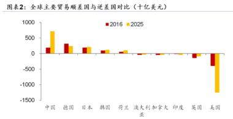
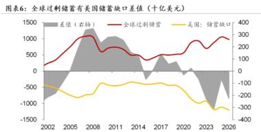
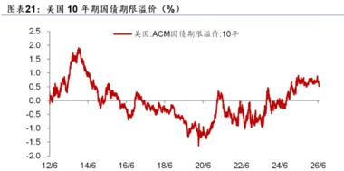
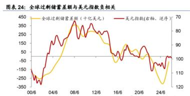
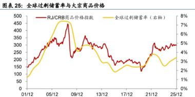
一句话核心：华福提出一个统一框架——"全球顺差国的多余储蓄，能不能填上美国的储蓄缺口"。2022 年这个差额由正转负（钱不够花了），于是美债利率中枢抬升、美元趋于走强、大宗商品跟着储蓄周期走，唯独美股估值和它关系不大。
背景与关键数据
- 什么是"过剩储蓄"？ 一个国家挣的钱花不完、存下来的部分。中、日、德这些贸易顺差国就是"储蓄大户"；美国长期贸易逆差、花得比挣得多，是"储蓄缺口大户"（缺口＝投资 - 储蓄）。
- 核心指标 = 顺差国过剩储蓄 − 美国储蓄缺口。> 0：全世界的"闲钱"够填美国的窟窿，甚至有富余 → 钱多、利率往下压；< 0：闲钱不够填 → 钱紧、利率往上顶。
- 关键转折：2008 后这个差额一路收窄，2022 年由正转负（从"钱多"变成"钱紧"），2024–25 略反弹但仍是负值。2023 年后中国贡献了全球过剩储蓄的六成以上。
- 海外央行持有美债的比例从最高约 40% 下降了约 12 个百分点——外国"接盘侠"买美债的力度在减弱，而美债供给（美国发债）却在爆发式增长，供需失衡推高利率。
图片解读（5 张，逐张说明）
- 图 1（post7_img1，"图表 2"）：全球主要贸易顺差国与逆差国对比（十亿美元），红柱=2016、黄柱=2025。左边中国、德国、日本、韩国等是正的（顺差），中国 2025 年最高（约 +750）；最右边美国是深深的负柱（约 −1250 至 −1500，逆差最大）。一图说明"世界的钱从顺差国流向美国"。
- 图 2（post7_img2，"图表 6"）：全球过剩储蓄与美国储蓄缺口的差值（灰色阴影为差值、右轴），2002–2026。阴影从高位一路走低，2022 年前后落入负区间——这就是"由正转负"的可视化。
- 图 3（post7_img3，"图表 21"）：美国 10 年期国债期限溢价（%），2012–2026。曾在 2020 年前后跌到约 −1.5% 的低位，2022 年后逐步抬升到约 +0.5%~1%。期限溢价回正，正是"钱紧、要求更高补偿"的体现。
- 图 4（post7_img4，"图表 24"）：全球过剩储蓄差额（柱/线）与美元指数（右轴、逆序）呈负相关，2000–2024。储蓄多→美元弱，储蓄少→美元强，两条线镜像对称。
- 图 5（post7_img5，"图表 25"）：全球过剩储蓄率与 RJ/CRB 大宗商品价格指数，2001–2025，同涨同跌（正相关）。储蓄扩张期往往是商品牛市。
为什么重要 / 对市场的含义
- 这套框架把"为什么美债利率降不下来、美元为什么可能重新走强、大宗商品跟着什么走"用一根主线串起来，属于**"第一性原理"级别的宏观地图**。
- 结论对资产的含义：利率中枢上移（利空长久期债券、利空高估值成长股的贴现）、美元可能重新走强（压新兴市场）、大宗看储蓄周期、而美股估值另有逻辑（靠盈利和产业趋势，不是靠全球流动性）。
延伸知识
- 期限溢价(term premium)：你借钱给别人 10 年，比借 1 年要承担更多不确定性（通胀、违约、政策），所以要求额外补偿，这部分补偿就是期限溢价。它由负转正，说明市场对"长期持有美债"要更高回报，长端利率因此易上难下。
- "全球储蓄过剩"假说：这个概念由前美联储主席伯南克在 2005 年提出，用来解释"为什么美国逆差这么大、利率却这么低"——因为亚洲和产油国的储蓄涌入美国压低了利率。华福的框架正是这套理论的"反过来用"：当过剩储蓄消退，当年的低利率红利也随之退潮。
- 席勒市盈率(CAPE)：用过去 10 年经通胀调整的平均盈利算的市盈率，专门用来看"估值是否长期偏贵"。美股 CAPE 从 20 倍升到 35 倍以上，是历史高位区间，提示估值不便宜。
帖 8 · 15:23 · #其他国家经济 — "特朗普账户"：给美国新生儿的复利实验
帖子原文
bloomberg：特朗普账户带来了一个可能性：给这几年出生的美国孩子一个先机，让数十年的复利增长发挥作用，并有可能在他们的一生中积累数百万美元。政府给的初始资金为 1000 美元，目前已有数十家企业和亿万 CEO 表示有兴趣给自己的员工匹配新增捐赠，假设年复利 7%，每年投入 1000 美元，这些孩子在 18 岁的时候可以轻松获得 19.8 万美元，65 岁退休的时候会超过 470 万美元。特朗普团队在对外各种鹰派的同时，对国内选民保持"讨好"。
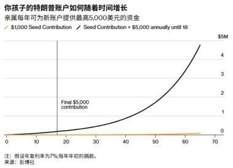
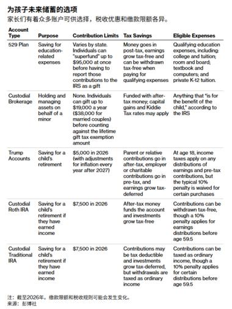
一句话核心："特朗普账户"给新生儿 1000 美元启动金，再靠每年定投 + 长期复利，18 岁可攒到约 20 万美元、65 岁超 470 万美元——是"对内讨好选民"的一项长期理财福利。
背景与关键数据
- 政府初始注资 1000 美元；不少企业愿意给员工的孩子"匹配"追加。
- 关键假设：年复利 7%（接近美股长期年化回报）。文字提到"18 岁约 19.8 万、65 岁超 470 万"。注意：只靠每年 1000 美元很难到 20 万，图里给的是"1000 美元种子 + 每年 5000 美元、定投到 18 岁"这条更饱满的路径，两者要对照着看（正文数字与图表口径略有出入，以图为准更清楚）。
图片解读（2 张）
- 图 1（post8_img1）：彭博曲线图"你孩子的特朗普账户如何随着时间增长"，纵轴 0–5 百万美元，横轴 0–65 岁。两条线：只投 1000 美元种子（几乎贴着底部不动）vs 种子 + 每年 5000 美元定投到 18 岁（一条陡峭上扬的指数曲线，到 65 岁冲向约 470 万）。备注：假设年复利 7%、每年年初投入。这张图是复利威力最直观的教科书图：前期平缓、后期陡峭。
- 图 2（post8_img2）：彭博表格"为孩子未来储蓄的选项"，对比 5 类账户（529 教育金、托管券商账户、特朗普账户、托管 Roth IRA、托管传统 IRA），列出用途、缴款上限、税收优惠、可用支出。其中特朗普账户 2026 年上限 5000 美元、税后缴款、18 岁后取用要按收入纳税。这张表帮你把"特朗普账户"放进美国既有的养娃理财工具箱里比较。
为什么重要 / 对市场的含义
- 这是"复利 + 长期定投"的国民级示范。若大规模落地，会把更多家庭的长期储蓄导入资本市场，是股市潜在的"长钱"来源。
- 政治上，它是"对外强硬、对内发糖"的组合拳，用真金白银的长期福利笼络选民。
延伸知识
- 复利的"72 法则"：本金翻倍所需年数 ≈ 72 ÷ 年化收益率。按 7% 算，约每 10 年翻一倍。所以时间越长，后段增长越夸张——这就是图 1 尾部为何陡峭。
- 越早开始越关键：复利的爆发力主要来自"最后那几个翻倍"，而它们建立在"最早那笔钱"上。给新生儿开户，本质是把"时间"这个复利最重要的原料一次性拉满。
帖 9 · 15:17 · #房价 — 中指院：百城二手房价环比再跌 0.42%
帖子原文
中指院：6 月百城二手住宅均价为 12639 元/平方米，环比下跌 0.42%，跌幅较上月扩大 0.10 个百分点。租赁住宅方面，受 6 月毕业季带动，短期租赁需求集中释放，50 城住宅平均租金为 33.97 元/平方米/月，环比上涨 0.08%，同比下跌 2.82%。
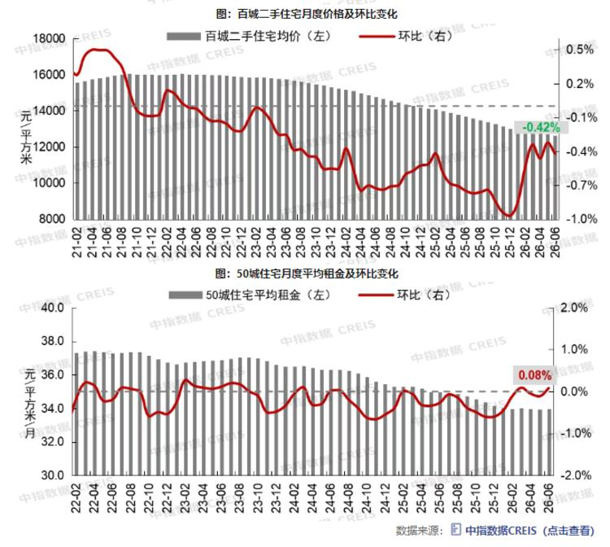
一句话核心：6 月百城二手房均价环比跌 0.42%、跌幅比上月还扩大；租金因毕业季短暂环比微涨 0.08%，但同比仍跌 2.82%。
背景与关键数据
- 二手房均价 12639 元/㎡，环比 −0.42%，且跌幅较上月扩大 0.10 个百分点（下跌在加速）。
- 租金：50 城均值 33.97 元/㎡/月，环比 +0.08%（毕业季旺季的季节性小反弹），但同比 −2.82%（长期趋势仍向下）。
图片解读
- 中指数据（CREIS）的两张组合图：
- 上图："百城二手住宅月度价格及环比变化"。灰柱=均价（左轴，从 2021 年约 16000+ 一路降到 2026 年约 12600），红线=环比（右轴）。红线长期在 0 轴下方，最新标注 −0.42%，形象展示"价格连月阴跌"。
- 下图："50 城住宅月度平均租金及环比变化"。灰柱=平均租金（左轴），红线=环比（右轴），最新 +0.08%，是零轴附近的一次小反弹。
- 两图对照：房价在系统性下行，租金只是季节性小波动。
为什么重要 / 对市场的含义
- 二手房价格比新房更能反映真实供需（新房价常受"限价/网签"影响）。二手价跌幅扩大，说明去库存和企稳还没到位。
- 租金同比仍跌，说明"以租养贷"更难，也压低了买房的投资吸引力（帖 11 会给出租金回报率的国际对比）。
延伸知识
- 环比 vs 同比：环比＝和上期（上月）比，看短期动能；同比＝和去年同期比，看长期趋势、剔除季节性。看数据要两个一起看：租金"环比涨、同比跌"就说明——短期有毕业季旺季扰动，但拉长看仍在下行。
- 租金的"季节性"：毕业季（6–8 月）、开学季是租房旺季，租金常有季节性抬升，属于"日历效应"，不代表趋势反转。
帖 10 · 15:16 · #其他国家经济 — 赴日游客暴增，日本加征出境税与签证费
帖子原文
日经：随着访日游客的激增，过度旅游已成为一大问题。日本政府于 7 月 1 日将国际观光旅客税（出境税）从 1000 日元提高到 3000 日元。目的是将增加的税收用于过度旅游对策。2025 年，日本的签证发放数量超过 786 万张，是史上第二高。中国游客的增加是导致日本签证发放数量增长的主要因素。
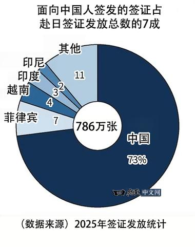
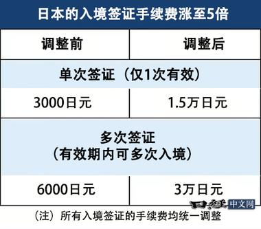
一句话核心：赴日游客太多引发"过度旅游"问题，日本 7 月 1 日起把出境税从 1000 日元涨到 3000 日元、签证手续费也大幅上调，而中国游客是签证暴增的主力（2025 年发放 786 万张、史上第二高，中国占 73%）。
背景与关键数据
- 出境税（国际观光旅客税）：1000 → 3000 日元（涨 2 倍），专款用于治理过度旅游。
- 2025 年日本签证发放 786 万张，史上第二高；中国游客是主要增量。
图片解读（2 张）
- 图 1（post10_img1）：饼图"面向中国人签发的签证占赴日签证发放总数的 7 成"。总量 786 万张，中国占 73%（一家独大的深蓝大扇形），其余零散：菲律宾 7、越南 4、印度 3、印尼 2、其他 11（单位为百分比）。直观说明赴日签证的绝对主力是中国。
- 图 2（post10_img2）：表格"日本的入境签证手续费涨至 5 倍"，对比调整前/后：单次签证 3000 → 1.5 万日元；多次签证 6000 → 3 万日元（都是 5 倍）。注：所有入境签证手续费统一上调。
- 两图互补：一张讲"客源结构"，一张讲"涨价幅度"。
为什么重要 / 对市场的含义
- 日元长期偏弱 + 物价相对便宜，让日本成为"性价比旅游天堂"，游客暴增。旅游是日本重要的服务出口和内需引擎，但过度旅游带来拥堵、扰民、成本外溢。
- 加税加费是"给旅游热降温 + 让游客分担治理成本"的手段。对旅游、免税、航空、酒店等板块是边际利空；对财政是增收。
延伸知识
- "过度旅游"(overtourism)：当游客数量超过一地的承载力，就会挤占本地居民生活、推高物价房租、损耗景点。威尼斯、巴塞罗那都靠征"游客税/限流"来治理，日本这次也是同一思路。
- 弱货币的双刃剑：日元贬值让出口和入境游受益，但也抬高进口（能源、食品）成本、削弱国民购买力。旅游繁荣的另一面，往往是本国居民的"实际收入被通胀侵蚀"。
帖 11 · 15:10 · #房价 — JPM：中国房地产从"周期性"转入"结构性"下行
帖子原文
JPM：中国房地产正在从周期性下行，进入长期结构性下行。依然预测今年中房量价齐跌。中国 70 城二手房指数从 2021 年至今累计下跌约 23%，一线城市同期跌幅约 38%，深圳从 2021 年 5 月以来跌幅约 43%。现实中的房价调整可能比官方值更大。中国整体住宅租金回报率约 2.6%，明显低于全球样本平均 5.0%。一线城市更低：北京约 2.0%，上海约 1.7%，广州约 1.6%，深圳约 1.4%。而全球一线城市样本平均租金回报率约 3.3%。中国全国房价收入比约 6.3 倍，并不算全球最夸张；但中国一线城市平均约 16 倍，高于全球城市样本平均 12 倍。其中北京约 20 倍，上海和深圳约 17 倍，广州约 10 倍。从新增家庭角度看，中国长期新房销售面积的合理中枢可能不是过去的 15 亿—17 亿平方米，而是大约 6 亿多平方米。对比 2021 年住宅销售面积约 15.2%。城市化带来的新增城市家庭数量也在下降：早年每年可以贡献 600 万—1000 万新增城市家庭，未来可能逐步降到 100 万—300 万左右。新家庭少了，新房需求自然少了。
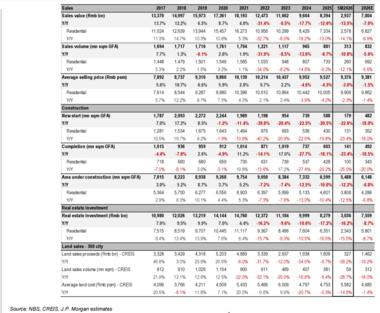
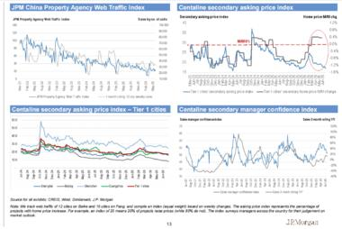
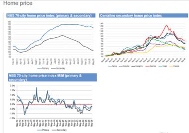
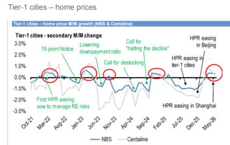
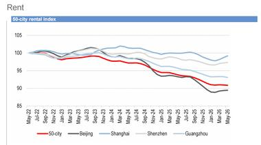
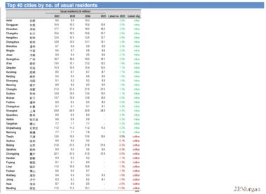
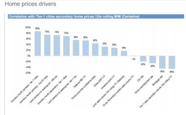
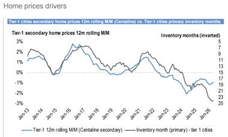
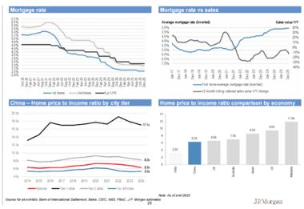
一句话核心：JPM 给中国房地产下了个"重"判断——不是周期性回调，而是长期结构性下行：价格已大跌、租金回报率全球垫底、一线房价收入比畸高，而支撑需求的"新增城市家庭"正在断崖式减少，新房销售的合理中枢可能只有过去的三分之一。
背景与关键数据
- 累计跌幅：70 城二手房指数自 2021 年跌约 23%，一线约 38%，深圳自 2021/5 约 43%（且现实调整可能比官方数更大）。
- 租金回报率（年租金/房价）：全国约 2.6%，一线更低（北京 2.0%、上海 1.7%、广州 1.6%、深圳 1.4%），远低于全球样本平均 5.0%、全球一线平均 3.3%。回报率越低，说明房价相对租金越贵。
- 房价收入比（房价/家庭年收入）：全国约 6.3 倍（不算离谱），但一线约 16 倍（全球城市平均 12 倍），北京约 20 倍、上海深圳约 17 倍。
- 需求中枢：长期合理新房销售面积可能从过去的 15 亿–17 亿㎡ 降到约 6 亿多㎡；每年新增城市家庭从 600 万–1000 万降到 100 万–300 万。
图片解读（9 张，JPM 研报页）
- 图 1（post11_img1）：JPM 的中国房地产大表（2017–2027E 预测），涵盖销售额、住宅销售、均价、新开工、竣工、在建面积、房地产投资、土地出让等分项及同比。是全篇的"数据底座"，逐年展示量价的下台阶。
- 图 2（post11_img2）：四联图——中介带看的网络流量指数、中原二手挂牌价指数、一线城市挂牌价指数、中介经理信心指数。多口径显示"看房热度和信心走弱"。
- 图 3（post11_img3）：三联图——NBS 70 城房价指数（新房&二手）、中原二手房价指数、70 城房价环比。整体自 2021 高点后持续回落。
- 图 4（post11_img4）：一线城市二手房价环比（NBS & 中原），并标注了历次政策事件："16 条""降首付比""呼吁止跌回稳""去库存""放松限购"等——每一轮政策后都只有短暂反弹，随即再度走弱，把"政策托底但难扭趋势"画得淋漓尽致。
- 图 5（post11_img5）：50 城租金指数，全国和北京跌向约 90，上海/深圳/广州相对抗跌。印证租金也在走弱。
- 图 6（post11_img6）：中国前 40 大城市常住人口表（2022–2025 及变化），用于分析"人往哪走、需求在哪"。
- 图 7（post11_img7）：一线二手房价的"驱动因子"相关性排行，正相关最高的因子达约 86%，而失业率、房贷利率等呈负相关（约 −4% 至 −6%）。
- 图 8（post11_img8）：一线二手房价环比（12 月滚动）vs 一线新房库存月数（逆序），2013–2026。库存越堆越高，房价越往下，两者高度反向。
- 图 9（post11_img9）：四联图——房贷利率、房贷利率 vs 销售、中国分线级房价收入比（一线约 15–17 倍）、各经济体房价收入比对比（中国偏高）。
为什么重要 / 对市场的含义
- "周期性 vs 结构性"是本帖的灵魂。周期性下行会随政策和经济回暖而反转；结构性下行是人口、城镇化、家庭形成这些"慢变量"决定的，政策只能缓冲、难以逆转。JPM 选了后者，等于说"别指望大反弹"。
- 对经济：房地产作为居民主要资产，长期下行会通过"财富效应"压制消费；对地方财政（依赖土地出让）也是长期挑战。
延伸知识
- 租金回报率 = 年租金 ÷ 房价，相当于"把房子当债券看"的票息率。深圳 1.4% 意味着不吃不喝要 70 多年租金才回本，远低于存款和国债利率，说明房价里含有大量"升值预期"。当升值预期消退，低回报率就撑不住高房价。
- 房价收入比：房子总价是家庭年收入的多少倍，国际上 6–9 倍算合理上限。一线 16–20 倍属于全球最贵梯队。
- "家庭形成"(household formation)：真正买房的是"新组建的家庭"（结婚、独立、进城）。当年轻人口和城镇化放缓，新增家庭减少，新房的"刚需地基"就在收缩——这是结构性判断的根本依据。
帖 12 · 14:59 · #金融 — 巴克莱：债券资金"买的是收益率，不是加息"
帖子原文
巴克莱：自 4 月低点以来，美国债券基金资金流入明显反弹。美国固定收益共同基金和 ETF 在 5 月录得最大月度流入，6 月仍然保持强劲。年初至今累计流入已经超过 3200 亿美元，大约是去年同期的两倍。背后的原因不是投资者忽然非常看好债券价格上涨，而是当前固定收益的"绝对收益率"变得很有吸引力。比如美国国债平均收益率约 4.25%，公司债收益率超过 5%。这使得债券相对于其他风险资产的吸引力上升。不过资金主要流向短久期和中久期债券基金，而长期政府债基金流入很弱。哪怕 30 年期美债收益率已经处在金融危机后高位，投资者依然不太愿意大举买入长债。普通债券基金对长久期债券兴趣不强，但养老金、保险公司这类负债驱动型投资者，在长端收益率升高时反而会买长债。原因是高利率可以提高贴现率，降低长期负债的现值，改善养老金资金状况。所以，长债不是完全没人买，而是买家结构不一样。
虽然市场已经从"预期美联储降息"转向"担心美联储可能加息"，债券基金流入却仍然强劲，而且利差产品也有需求。这和真正加息周期前的典型资金流表现不一致。所以我们认为债券基金投资者把这轮利率重新定价理解为一种风险溢价上升，并没有真的把"美联储开启持续加息周期"当作基准情形。
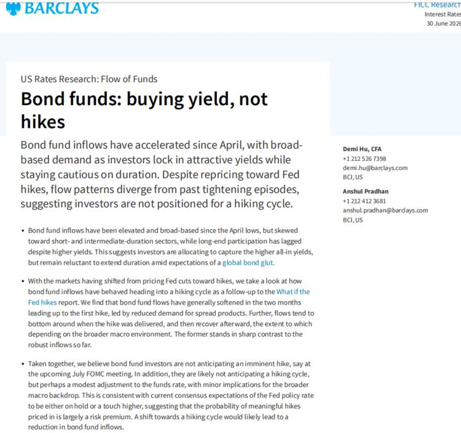
一句话核心：债券基金资金今年猛流入（YTD 超 3200 亿美元、约去年两倍），但大家买的是"高绝对收益率"（美债 ~4.25%、公司债 >5%），偏爱短中久期、躲着长债——说明投资者并不真信美联储会开启加息周期，只把利率上行当作"风险溢价上升"。
背景与关键数据
- YTD 债券基金/ETF 净流入 > 3200 亿美元，约为去年同期两倍；5 月创单月最大流入。
- "绝对收益率"vs"资本利得"：买债券赚钱有两条路——① 收益率下降、债价上涨（资本利得）；② 单纯拿票息（绝对收益率）。现在是冲着②去的。
- 资金偏短、中久期，长期政府债基金流入很弱，即便 30 年美债收益率处于金融危机后高位。
- 例外买家：养老金/保险这类"负债驱动型"投资者反而在高利率时买长债——因为高贴现率会降低其长期负债的现值，改善资金缺口。
图片解读
- 巴克莱 2026 年 6 月 30 日研报截图，标题"Bond funds: buying yield, not hikes"（债券基金：买的是收益率，不是加息），栏目"US Rates Research: Flow of Funds"。
- 正文三段要点：① 4 月以来流入强劲且广泛，但偏短中久期、长端参与滞后，反映投资者想锁定高"综合收益率"却不愿拉久期（担心"全球债券过剩"global bond glut）；② 对比历史加息周期，通常首次加息前两个月资金流会转弱，与当前强流入形成反差；③ 结论：债券投资者并不预期近期加息，最多是"小幅上调"，当前定价的加息概率主要是"风险溢价"。
为什么重要 / 对市场的含义
- 这帖是今天"利率究竟会不会真加息"辩论的第三个视角（帖 1 央行、帖 2 大摩、帖 12 巴克莱），三家都倾向"别把鹰派当成真加息周期"。
- 对投资者：在高收益率环境下，债券重新变成"有吸引力的收息工具"，但要不要拉长久期，取决于你对利率见顶的信心。短债 = 稳收息、少波动；长债 = 赌利率下行、波动大。
延伸知识
- 久期(duration)：衡量债券价格对利率变动的敏感度。久期越长，利率每动 1%，价格波动越大。怕利率再涨，就买短久期"扛揍"；赌利率要跌，才买长久期"博价差"。
- 负债驱动投资(LDI)：养老金/保险的负债是"未来要付的钱"，用利率贴现成现值。利率升高→负债现值下降→缺口改善，所以它们乐意在高利率时锁定长债来"匹配负债"。这解释了为什么"长债没人买"其实不准确——是买家换了一批人。
帖 13 · 14:54 · #房价 — 长江：一线带看回落，二三线走平
帖子原文
长江：6 月第 4 周，一线城市房产带看多数回落，二、三线大体走平。
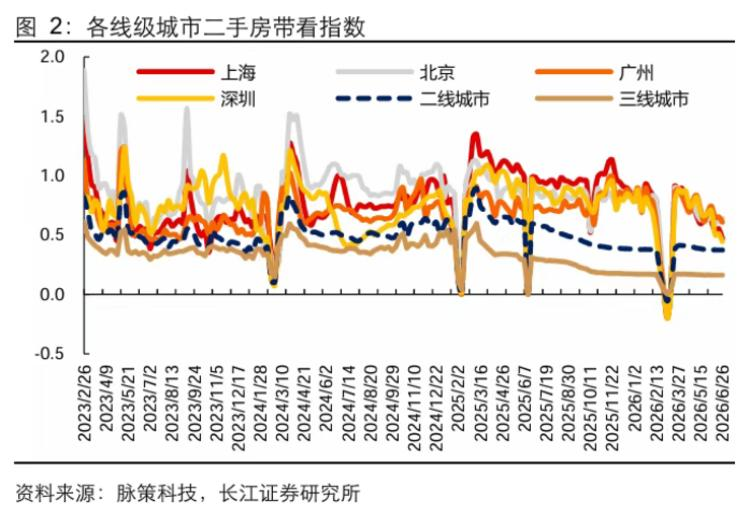
一句话核心：6 月最后一周，一线城市看房热度多数回落，二三线基本走平——买房意愿的"高频温度计"在降温。
背景与关键数据
- "带看"＝中介带客户实地看房的次数，是购房意愿最灵敏的高频先行指标（比成交、比价格都更早反应）。
- 一线回落、二三线走平，说明连相对更抗跌的一线也在降温。
图片解读
- 长江证券"各线级城市二手房带看指数"折线图，2023/2 至 2026/6。上海（红）、北京（灰）、广州（橙）、深圳（黄）、二线（蓝虚线）、三线（棕）。
- 特征：整体震荡下行，每年春节前后（2/26、2/13 附近）有规律性的深"V"暴跌（假期效应），节后反弹但一年比一年低；一线始终在上方、三线在最底部。最新一周多数曲线回落。
- 直观信号：看房的人在变少，且这是长期趋势叠加季节波动。
为什么重要 / 对市场的含义
- 带看是"漏斗"的最上层：先有看房，才有下定、成交、过户。带看回落，往往预示后续成交和价格继续承压，与帖 6、9、11、16 相互印证。
延伸知识
- 高频指标的价值：官方房价数据是月度、有滞后，而带看、挂牌量、二手房网签是"周度甚至日度"的高频数据，能更早捕捉拐点。做研究要学会"用高频数据抢跑官方数据"。
- 季节性要剔除：看到春节那种规律性暴跌别慌，那是日历效应。判断趋势要看"同比"或"剔除季节后的中枢"是否在下移。
帖 14 · 14:46 · #金融 — 霍尔木兹通行恢复，伊朗谈判仍僵持
帖子原文
zerohedge：美方仍在维持伊朗谈判取得进展的假象，尽管德黑兰周三再次确认多哈没有直接会谈。截至 6 月 30 日，所有商业船舶通过海峡的滚动 7 天平均通行次数为 38 次。战前，霍尔木兹海峡处理了全球约五分之一的石油和液化天然气供应，平均每天原油和燃料流动量约为 2000 万桶。目前每天至少有 1000 万条通过，加上 500 万条通过替代路线，流量正接近正常水平。
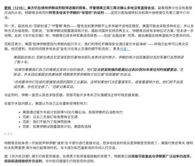
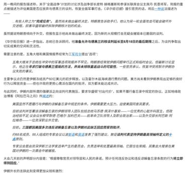
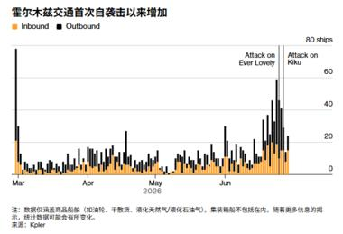
一句话核心：霍尔木兹海峡的船舶通行量正接近正常（7 天均值 38 次/天），能源运输在恢复；但美伊谈判仍在僵持——美方对外称"有进展"，德黑兰却否认有直接会谈。
背景与关键数据
- 霍尔木兹海峡：全球最重要的能源咽喉，战前承担全球约 1/5 的石油和液化天然气、每天约 2000 万桶原油和燃料。一旦被封锁，油价会剧烈飙升。
- 当前：每天至少 1000 万桶通过海峡 + 500 万桶走替代路线，流量正接近正常；商业船舶 7 天滚动均值 38 次/天。
- 谈判：美方维持"有进展"叙事，但德黑兰周三确认多哈没有直接会谈——外交仍未破局。
图片解读（3 张）
- 图 1、图 2（post14_img1、img2）：zerohedge 文章的中文译文长截图，详细描述美伊谈判的拉锯——美方对外释放乐观信号，伊方否认直接接触，并涉及核查、制裁、护航等分歧。属于"背景叙事"，帮助理解地缘博弈的细节。
- 图 3（post14_img3）：走势图"霍尔木兹交通首次自袭击以来增加"，橙色=进港(Inbound)、黑色=出港(Outbound)，2026 年 3–6 月，纵轴船舶数（0–80）。图中标注了两次事件"Attack on Ever Lovely""Attack on Kiku"（对油轮的袭击），可见袭击期间通行量剧烈波动、随后回升。数据来源 Kpler。核心信息：航运量已从袭击冲击中修复、接近正常。
为什么重要 / 对市场的含义
- 霍尔木兹是油价最大的"地缘尾部风险"之一。通行恢复正常 → 供给中断担忧缓解 → 对油价是利空（呼应帖 1 里"原油下跌、高盛说石油过剩会回归"）。
- 但谈判未破局意味着风险没消除，属于"暂时平静"。能源和航运资产要继续盯这条线。
延伸知识
- "咽喉要道"(chokepoint)风险：全球贸易高度依赖几条狭窄水道（霍尔木兹、马六甲、苏伊士、巴拿马运河）。任何一处受阻，都会放大到全球运价和商品价格。这是地缘政治影响宏观最直接的传导渠道。
- 用"另类数据"读地缘：Kpler 这类公司靠卫星、AIS 船舶信号追踪实时航运，能比官方更早看清"封锁到底有多严重"。学会用这种"另类数据"（alternative data）交叉验证新闻叙事，能避免被情绪化标题带偏。
帖 15 · 14:36 · #其他国家经济 — 盖洛普：俄罗斯经济悲观创历史新高
帖子原文
盖洛普：最新 3-5 月的调查显示，俄罗斯受访者中有 60% 认为当地经济状况正在恶化，创下历史新高，认为经济正在好转的人只有 27%。这是自 2006 年以来，俄罗斯成年人中首次多数认为经济正在走下坡路。2010 年至 2016 年间，俄罗斯人对当地经济走向的判断大多比较中性。每年约有 40% 的人主动表示，经济既没有变好，也没有变坏。但近几年，这种中间态度明显减少。如今只有约十分之一的俄罗斯人认为当地经济没有变化，更多人认为经济要么在改善，要么在恶化。俄罗斯人对自身生活水平也越来越悲观。最新民调中，56% 的人表示自己的生活水平正在下降。这是调查记录中的最高比例，也是 20 年来俄罗斯成年人首次多数持这一看法。民用经济越疲弱，俄罗斯就越需要依靠更高的军费开支来维持经济产出和就业。这种循环让俄罗斯更加依赖国防支出，更难在不引发进一步经济下滑的情况下退出战争。俄罗斯人对就业市场的看法今年急剧转差。2026 年的调查显示，只有 35% 的人认为现在在当地找工作是好时机，58% 的人认为现在不是好时机。俄罗斯失业率仍然偏低，但主要原因不是经济强劲，而是战争和大规模动员造成劳动力短缺。历史上，俄罗斯人对就业市场的感受通常与失业率走势高度一致。但在 2026 年，民众感受比就业数据本身更差，反映出全国范围内更深的经济悲观情绪。
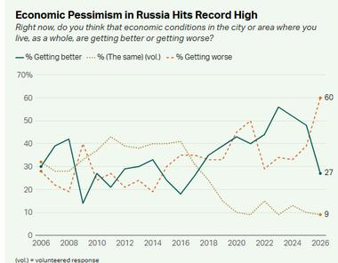
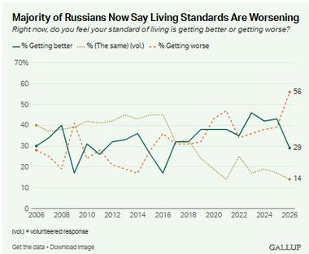
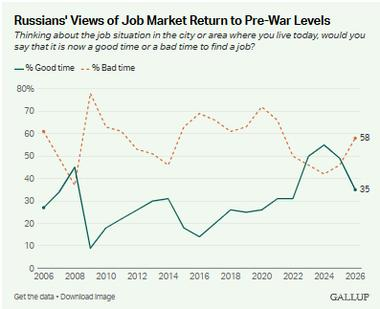
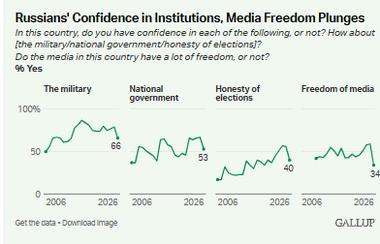
一句话核心：盖洛普民调显示俄罗斯经济悲观情绪创历史新高——60% 认为经济在恶化、56% 认为生活水平在下降、58% 认为现在不是找工作的好时机；低失业率不是经济强，而是战争抽走了劳动力。
背景与关键数据
- 认为经济恶化 60%（历史新高）、好转仅 27%，是 2006 年以来首次"多数人看衰"。
- 生活水平：56% 认为在下降（记录最高、20 年来首次过半）。
- 就业：仅 35% 认为是找工作好时机，58% 认为不是。
- 关键逻辑链：民用经济越弱 → 越依赖军费拉动产出和就业 → 越难退出战争（一种自我强化的"战争经济"循环）。低失业是"动员抽人"造成的假性繁荣。
图片解读（4 张盖洛普图）
- 图 1（post15_img1）："Economic Pessimism in Russia Hits Record High"。三条线：认为变好（深绿）、不变（点线）、变坏（橙虚线），2006–2026。变坏冲到 60（最高）、变好落到 27、不变缩到 9——中间派消失、悲观占上风。
- 图 2（post15_img2）："Majority of Russians Now Say Living Standards Are Worsening"。变坏 56、变好 29、不变 14，恶化线创新高。
- 图 3（post15_img3）："Russians' Views of Job Market Return to Pre-War Levels"。好时机（绿）35、坏时机（橙）58，就业信心回落到战前的低水平。
- 图 4（post15_img4）："Russians' Confidence in Institutions, Media Freedom Plunges"。四个迷你图：对军队信心 66%、对国家政府 53%、对选举诚信 40%、对媒体自由 34%——越往"权力监督"方向，信任度越低。
为什么重要 / 对市场的含义
- 民调是"软数据"，但能揭示官方硬数据（如低失业率）背后的真实民生温度。俄罗斯的"低失业 + 高悲观"是典型的"战争经济扭曲"。
- 对宏观：一个越来越依赖军费的经济，抗风险能力和长期增长潜力都在被侵蚀，这也是理解制裁与战争长期影响的窗口。
延伸知识
- "战争经济"(war economy)：把大量资源投向军工，短期能拉动 GDP 和就业（造炮弹也算产出），但这些产出不改善民生、不形成可持续的生产力，属于"挖坑再填坑"式增长。一旦停战，军工需求骤降，经济反而可能硬着陆。
- 硬数据 vs 软数据：失业率、GDP 是"硬数据"；信心指数、民调是"软数据"。当两者背离（失业低但民众极度悲观），往往说明硬数据被特殊因素扭曲了，这时软数据反而更接近真相。
帖 16 · 14:30 · #房价 — 国信达：二手房挂牌价指数续跌，西安年内领跌
帖子原文
国信达：第 26 周，全国二手房挂牌价指数环比上周下降 0.07%，今年累计跌幅上，西安领先 -9.1%
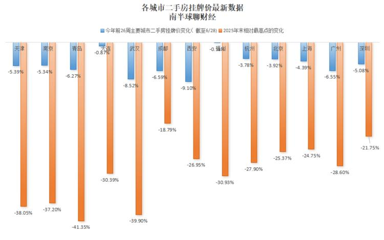
一句话核心：第 26 周全国二手房挂牌价指数环比再跌 0.07%，年内累计跌幅榜上西安以 −9.1% 领跌。
背景与关键数据
- "挂牌价"：卖家在平台上标出的报价（不是实际成交价）。挂牌价下跌，说明卖家在主动降价求售，是市场偏弱的信号。
- 全国指数环比 −0.07%；年内累计西安领跌 −9.1%。
图片解读
- 这是"南半球聊财经"自制的柱状图"各城市二手房挂牌价最新数据"，两组柱子：
- 蓝柱=今年前 26 周主要城市挂牌价变化（截至 6/28）：西安 −9.10%、武汉 −8.52%、青岛 −6.27%、成都/广州 约 −6.5%、天津/南京/深圳 约 −5%、上海 −4.39%、北京 −3.92%、杭州 −3.78%、大连 −0.87%。
- 橙柱=2025 年末相对最高点的累计变化（长得多）：青岛 −41.35%、武汉 −39.90%、天津 −38.05%、南京 −37.20%、福州 −30.93%、大连 −30.39%、杭州 −27.90%、西安 −26.95%、北京 −25.37%、上海 −24.75%、广州 −28.60%、深圳 −21.75%。
- 两组对比的深意：橙柱（离高点）普遍 −20% 到 −40%，说明从周期高点算起，各城二手挂牌价已腰斩式回撤；蓝柱（今年）虽小但仍在继续跌，说明下行尚未结束。
为什么重要 / 对市场的含义
- 挂牌价是比成交价更"诚实"的卖方情绪指标（成交价常因议价、网签限制失真）。挂牌价普跌 + 今年继续跌，佐证了帖 6/9/11/13 的"房市仍在下行"判断。
- 城市分化明显：强二线（青岛、武汉、西安）跌幅比一线更猛，说明这轮调整二线比一线更痛。
延伸知识
- 挂牌价 vs 成交价 vs 官方指数：挂牌价最灵敏（卖方报价，随时可改）、成交价其次、官方指数最滞后。三者结合看才全面：挂牌价领跌，往往预示后续成交价和官方指数补跌。
- "从高点回撤"的视角：只看"今年跌多少"会低估调整深度。加上"离历史高点跌多少"（橙柱），才能看清一轮资产价格调整的真实幅度——很多城市其实已从高点跌去三四成。
今日全图索引
| 帖号 | 时间 | 主题 | 标签 | 图片文件 |
|---|---|---|---|---|
| 1 | 15:57 | 沃什守物价 + 标普等权创新高 | #金融 | post1_img1.jpg |
| 2 | 15:50 | 大摩：鹰派 FOMC ≠ 很快加息 | #金融 | post2_img1.jpg |
| 3 | 15:46 | 日本高市内阁支持率 68% + 减税 | #其他国家经济 | post3_img1.jpg |
| 4 | 15:43 | 新西兰房价三连跌 / IMF 建议加息 | #其他国家经济 | post4_img1.jpg |
| 5 | 15:39 | 大众拟裁 10 万 / 欧洲造车人工成本畸高 | #其他国家经济 | post5_img1.jpg |
| 6 | 15:37 | 大摩：中国房企销售继续走弱 | #房价 | post6_img1.jpg |
| 7 | 15:35 | 华福：全球过剩储蓄框架（美债/美元/大宗） | #金融 | post7_img1~5.jpg |
| 8 | 15:23 | "特朗普账户"复利实验 | #其他国家经济 | post8_img1~2.jpg |
| 9 | 15:17 | 中指院：百城二手房价环比 −0.42% | #房价 | post9_img1.jpg |
| 10 | 15:16 | 赴日游客暴增 / 加征出境税与签证费 | #其他国家经济 | post10_img1~2.jpg |
| 11 | 15:10 | JPM：中国房地产转入结构性下行 | #房价 | post11_img1~9.jpg |
| 12 | 14:59 | 巴克莱：债券资金买收益率不买加息 | #金融 | post12_img1.jpg |
| 13 | 14:54 | 长江：一线带看回落，二三线走平 | #房价 | post13_img1.jpg |
| 14 | 14:46 | 霍尔木兹通行恢复 / 伊朗谈判僵持 | #金融 | post14_img1~3.jpg |
| 15 | 14:36 | 盖洛普：俄罗斯经济悲观创新高 | #其他国家经济 | post15_img1~4.jpg |
| 16 | 14:30 | 国信达：二手房挂牌价续跌，西安领跌 | #房价 | post16_img1.jpg |
全部图片原图保存在
jason_images/2026-07-01/子目录（35 张）。本报告已将图片内嵌为 base64，单文件即可查看。
本报告由自动化每日跟读任务生成，仅作学习与研究之用，不构成任何投资建议。